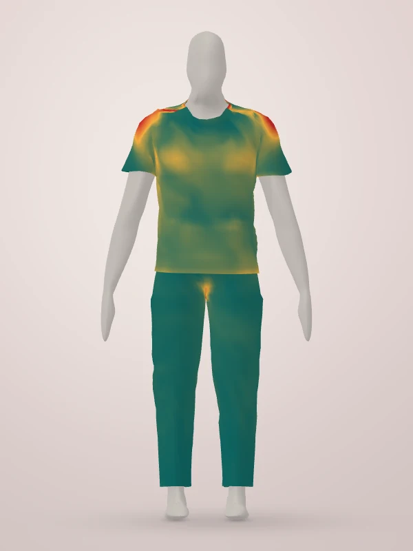

myclos.et
CS184 · Fall 2026 Milestone Report
myclos.et is an interactive 3D fitting room that shows how the same garment drapes on bodies with different proportions.
Kenny Pham, Aiden Solomon, Jeslyn Nguyen, and Junehee Lee
Project proposal · Webpage: [Add URL] · Video: [Add video link] · Slides: [Add slides link]
Progress
We reached our milestone goal of two garments draping on an adjustable body. Starting from an AI-assisted prototype, we built a C++/OpenGL fitting room with feminine and masculine MakeHuman models whose height, chest, waist, hips, and shoulders update live in cm or inches. Eleven UNIQLO-style garments in S/M/L are built from size charts and simulated as mass-spring cloth with Verlet integration, strain limiting, distance-field body collision, and particle self-collision. Users can layer two-piece outfits, add wind, view a stretch heatmap, and browse a closet of cached previews. Tests and benchmarks export measurements, timing, and collision results.
Progress vs. plan. We are ahead on features but behind on evaluation: cloth still crosses the body at the shoulders and hips, and our experiments haven’t been run yet.
Team contributions. Aiden and Junehee worked out the theory (mass-spring model, integration, body collision, fit evaluation); Kenny and Jeslyn implemented it. Kenny built the base app: the OpenGL viewer, cloth solver, adjustable fitting models, garment catalog, and closet mode. Jeslyn sped up body edits and improved the models’ hands, arm pose, and units.
Preliminary results



All three views show the same medium tee and trousers on the Tall preset. In the heatmap, teal marks 0% stretch, amber 15%, and red 30% or more. The tee had 18.7 cm of chest ease on Compact and 7.5 cm on Tall, measured as garment minus body circumference. A separate static check found cloth–body triangle crossings in 72 of 198 fits. Fit measurements · Collision results
Updated plan
Following staff feedback, our main focus is experiments: (1) collision accuracy vs. distance-field resolution and an exact mesh query, then fixing shoulder and hip crossings; (2) solver stability across timestep × stiffness at two cloth resolutions; (3) penetration and recovery during live edits; (4) ease vs. stretch for three bodies × S/M/L. We also plan to add more clothing, improve the UI, and polish the overall product. Stretch goals: skinned arm pose, fabric shading.